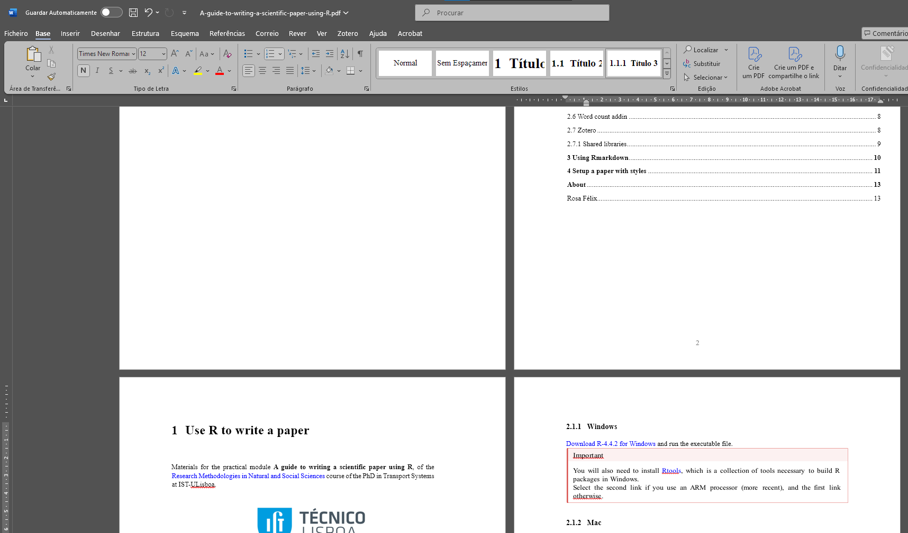

Code
plot(cars)You may want to work directly in the Visual mode, to “what you see is what you get”, and switch to the Source mode for very specific code things.
/
Type Ctrl + / to search for anything you want to include
You can refer to sections, figures, tables, and equations in your document using the @ref syntax.
You can refer to sections like this: [Section 1](#Introduction). This will show as “Section 1”.
You can refer to figures like this: \@ref(fig:plot1). This will show as “Figure 1”. For that, you need to add a label to the figure chunk, like this: {#fig:plot1}. or fig.cap="\label{plot1} Caption of the plot" in your r chunk.
plot(cars)You can refer to tables like this: \@ref(tab:table1). This will show as “Table 1”. For that, you need to add a label to the table caption like this:
# example with kable
knitr::kable(head(iris),
caption = "\\label{table1}Caption of the table", # label here
fotmat = latex,
booktabs = TRUE)You don’t need to use an ordered number, but just a name/label to your figures and tables. R markdown will handle then the order of them and provide them sequential numbering.
You can create a table of contents (toc) with the headings of your document, a list of tables (lot) or a list of figures (lof), simply by adding the following in the YAML:
---
title: "My Report"
author: "Your Name"
date: "2024-12-10"
output: pdf_document
toc: true
numbersections: true
number-depth: 3
lof: true
lot: true
---To include a image that is not produced with R or Python (for instance a methods flowchart), you can click on insert image in Visual mode, browse your image file, adjust the size, and provide a proper caption.
If it is produced with R or Py, simply let your code do it for you. Example:
library(ggplot2)
ggplot(mpg, aes(displ, hwy, colour = class)) +
geom_point()By default, LaTeX puts your images on the top of a page, or arranges them in order to get the minimum white spaces possible. That is why LaTeX documents look so nice an pretty.
Nevertheless, you can force the position of your image by adding the following to your chunk: fig.pos = "H". Other options:
You can use your results along the text, so every time you run the document, the results are also updated. Example:
Results show that 24.6660694% of the population uses car as a main mode of transport. 3+2 = 5 is a nice number.
This is how you would write it:
Results show that 86.9542296 % of the population uses car as a main mode of transport. 3+2 = 5 is a nice number.You can directly call your previously set variables.
Sometimes, you need to use some LaTeX packages to customize your document. To use those, you can add the following in the YAML:
preamble: |
\biboptions{authoryear}
\usepackage{url}
\usepackage{pdflscape}
\usepackage{float}
\usepackage{booktabs}
\usepackage{longtable}
\usepackage{makecell}
\usepackage{multirow}.docIt can be handful to convert your nice .pdf to a .doc file to send it to your supervisor, instead of a LaTeX or pdf file.
To do so, you can simply open your favorite word processor and open your pdf file inside. Click OK to convert when prompt.

Make some adjustments (sometimes it requires margins, spacing or line numbers), save it as .doc or .docx, and you are ready to go!
No headings, table of contents, citations, cross-references, figures, tables are missing.
Example of a paper written in R Markdown and submitted in pdf and LaTeX for the Elsevier journal Computers, Environment and Urban Studies:
https://github.com/U-Shift/biclar/blob/master/paper/PaperCEUS/PaperCEUS.Rmd
If your R Markdown (.Rmd) document is not in the root of your RStudio Project (.Rproj ) (i.e. - in the same folder), and if you have data or images that are in paths reffered to the project, you may want to change the knit configurations for it to work.
Go to Tools > Global options > R Markdown
In that case select Evaluate chunks in Project directory.
Usually journals accept the latex file (.tex) along the .pdf.
For that, you should prepare a SourceFiles.zip including:
The LaTeX file paper.tex
The used bibliography references.bib
A citation style if used transportation_research.csl
Any images files in a img folder
The paper.pdf file